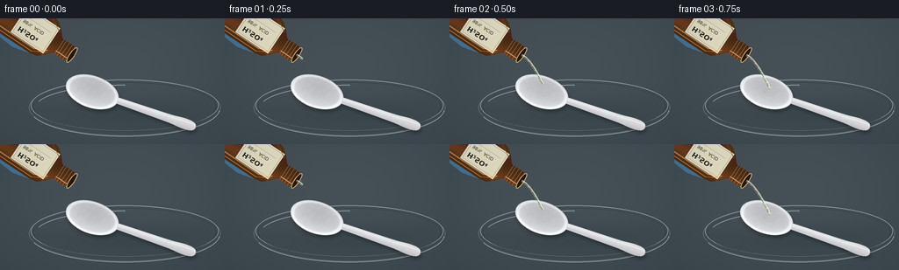
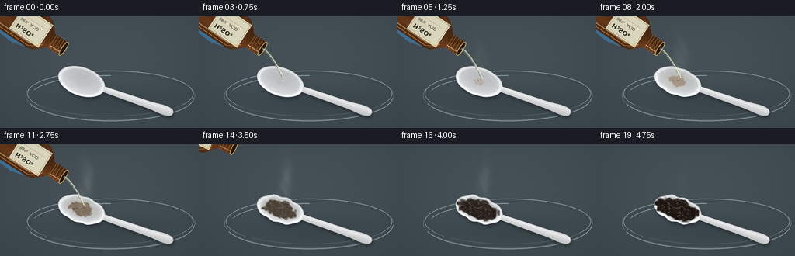

CODING AGENTS AS PIXEL WORLD MODELS
traex/GPT-6.1-Sol · material_0041
点击播放 · 原生 RGB 像素
逐轮保存的候选
回放视频、检查图与代码变化。
每份候选均可单独播放。实际图片检查记录在下方工具轨迹中。
候选 01播放与检查图
点击播放 · 原生 RGB 像素


展开代码变化
--- 上一保存版本
+++ 本次保存版本
@@ -0,0 +1,220 @@
+from pathlib import Path
+import numpy as np
+from PIL import Image, ImageDraw, ImageFilter, ImageFont
+import artifact_io
+
+ROOT=Path(__file__).resolve().parent
+W,H,S=256,144,4
+SW,SH=W*S,H*S
+rng=np.random.default_rng(734)
+Y,X=np.mgrid[0:SH,0:SW].astype(float)/S
+
+def noise(scale,seed):
+ r=np.random.default_rng(seed)
+ a=r.random((max(2,int(H/scale)),max(2,int(W/scale))))
+ return np.asarray(Image.fromarray((a*255).astype('uint8')).resize((SW,SH),Image.Resampling.BICUBIC),float)/255
+n=noise(3,31); n2=noise(1.2,18); n3=noise(9,92)
+texture=rng.normal(0,.55,(SH,SW))
+base=np.zeros((SH,SW,3),float)
+illum=10*np.exp(-((X-132)/160)**2-((Y-69)/100)**2)-.032*Y
+for k,c in enumerate([62,73,79]):base[:,:,k]=c+illum+texture
+# Subtle fine brushed worktop, lit from upper left.
+base+=np.sin(Y*5.3+noise(20,12)*2)[:,:,None]*.34
+
+def blend(a,c,alpha):
+ alpha=np.clip(alpha,0,1)
+ if np.ndim(c)==1:c=np.array(c)[None,None,:]
+ return a*(1-alpha[:,:,None])+c*alpha[:,:,None]
+
+def overlay(a,layer):
+ ar=np.asarray(layer,float);return blend(a,ar[:,:,:3],ar[:,:,3]/255)
+
+def layer():return Image.new('RGBA',(SW,SH))
+def pts(seq):return [(int(x*S),int(y*S)) for x,y in seq]
+def line(d,p,fill,width):d.line(pts(p),fill=fill,width=max(1,int(width*S)),joint='curve')
+def ellipse(d,box,fill,outline=None,width=1):d.ellipse(tuple(int(i*S) for i in box),fill=fill,outline=outline,width=max(1,int(width*S)))
+
+# Lab glass catch dish. Its rim has front and back reflections, not a solid fill.
+r=np.sqrt(((X-142)/108)**2+((Y-102)/31)**2)
+shadow=np.exp(-(((X-144)/108)**2+((Y-107)/28)**2)*2.2)*.22
+base=blend(base,[12,21,24],shadow)
+base=blend(base,[103,123,129],np.clip(1-r,0,1)*.1)
+glass=layer();gd=ImageDraw.Draw(glass)
+for bx,col,ww in [((33,70,251,134),(159,188,191,135),.7),((35,70,249,129),(225,241,236,135),.9),((38,73,246,129),(43,60,65,210),.6)]:
+ ellipse(gd,bx,None,col,ww)
+gd.arc(tuple(int(q*S) for q in (34,72,250,135)),3,163,fill=(231,246,245,200),width=2)
+gd.arc(tuple(int(q*S) for q in (40,76,245,128)),196,270,fill=(206,227,230,175),width=3)
+base=overlay(base,glass)
+
+# Spoon coordinates: the wide oval bowl merges smoothly into a slender handle.
+ux,uy=.945,.327
+cx,cy=105,84
+U=(X-cx)*ux+(Y-cy)*uy
+V=-(X-cx)*uy+(Y-cy)*ux
+bubbles=[(rng.uniform(-21,14),rng.uniform(-10,10),rng.uniform(.45,1.8),rng.uniform(0,1)) for i in range(38)]
+font=ImageFont.truetype('/usr/share/fonts/truetype/dejavu/DejaVuSans.ttf',int(5.3*S))
+fontb=ImageFont.truetype('/usr/share/fonts/truetype/dejavu/DejaVuSans-Bold.ttf',int(8*S))
+
+def spoon(a,t):
+ progress=np.clip((t-.13)/.76,0,1)
+ # The hot attacked bowl puckers and contracts locally; the handle remains intact.
+ uu=U+progress*(2.5*np.exp(-(U/27)**2)*np.sin(V*.2))
+ vv=V*(1+progress*.12*np.exp(-(U/32)**2)) + progress*1.1*np.sin(U*.35)*np.exp(-(U/32)**2)
+ rr=np.sqrt((uu/31.5)**2+(vv/18.5)**2)
+ bowl=np.clip((1-rr)*S*15,0,1)
+ half=3.8+1.6*np.clip((U-28)/95,0,1)+1.1*np.exp(-((U-110)/10)**2)
+ handle=(U>20)*(U<119)*np.clip((half-np.abs(V))*S,0,1)
+ end=np.clip((1-np.sqrt(((U-119)/6)**2+(V/5.6)**2))*8,0,1)
+ mask=np.maximum.reduce([bowl,handle,end])
+ sm=Image.fromarray(np.uint8(mask*255)).filter(ImageFilter.GaussianBlur(2*S))
+ sh=np.asarray(sm,float)/255
+ sh=np.roll(np.roll(sh,int(3*S),axis=0),int(1*S),axis=1)
+ a=blend(a,[20,26,28],sh*.49)
+ # Glossy injection-moulded white plastic, concave bowl with a bright raised lip.
+ interior=(188+17*vv/18+24*np.clip(rr,0,1)**2+4*n)
+ rim=np.exp(-((rr-.905)/.062)**2)
+ color=np.stack([interior+rim*32,interior+rim*33+2,interior+rim*32+5],2)
+ hlight=np.exp(-((V+half*.48)/1.3)**2)
+ hc=217+18*hlight-13*np.clip(V/half,0,1)+n*2
+ hc=np.stack([hc,hc+1,hc+3],2)
+ color=np.where(((handle+end)>bowl)[:,:,None],hc,color)
+ # Side wall gives the thin plastic edge real thickness.
+ edge=np.clip((rr-.963)/.025,0,1)*np.clip(vv/14,0,1)
+ color-=edge[:,:,None]*25
+ a=blend(a,np.clip(color,0,255),mask)
+ # Colorless acid collects in the bowl, then discolors with degradation.
+ wet=np.clip((t-.04)/.25,0,1)
+ wr=np.sqrt(((uu+1)/24)**2+(vv/12.2)**2)
+ pool=np.clip((1-wr)*14,0,1)*wet*bowl
+ a=blend(a,[151+45*(1-progress),142+50*(1-progress),107+80*(1-progress)],pool*(.09+progress*.16))
+ # A coherent, irregular expanding caramel/black damaged region.
+ field=np.sqrt(((uu+1)/26)**2+(vv/14)**2) + (n-.5)*.20 + (n3-.5)*.22
+ reach=.12+progress*.97
+ damage=np.clip((reach-field)*7,0,1)*bowl*progress
+ dark=np.clip((progress-.22)*1.5,0,1)
+ c0=np.array([155,103,45]);c1=np.array([32,24,20])
+ scorch=c0*(1-dark)+c1*dark
+ fold=np.sin(uu*.7+vv*.28+n3*5)*np.sin(vv*.8+n*2)
+ dcol=np.broadcast_to(scorch,(SH,SW,3)).copy()
+ dcol+=(n2[:,:,None]-.5)*14 + fold[:,:,None]*progress*8
+ a=blend(a,dcol,damage)
+ # Uneven blister highlights and fissures on the softened dark plastic.
+ cracks=(np.exp(-((np.sin(uu*.63+vv*.2+n3*5))/.15)**2))*damage*progress*.22
+ a=blend(a,[10,8,7],cracks)
+ marks=layer();d=ImageDraw.Draw(marks)
+ # Elliptical fluid meniscus and specular crescents in the glossy liquid.
+ if wet>0:
+ curve=[]
+ for ang in np.linspace(3.6,5.5,50):
+ u=-1+23*np.cos(ang);v=11.4*np.sin(ang)
+ curve.append((cx+ux*u-uy*v,cy+uy*u+ux*v))
+ line(d,curve,(245,241,216,int(105*wet)),.65)
+ for i,(u,v,rad,phase) in enumerate(bubbles):
+ if progress<.03 or (u/25)**2+(v/13)**2>reach**2:continue
+ amp=(np.sin(t*20+phase*12)+1)/2
+ br=rad*(.4+.55*amp)*min(1,progress*3)
+ xx=cx+ux*u-uy*v;yy=cy+uy*u+ux*v
+ ellipse(d,(xx-br,yy-br*.62,xx+br,yy+br*.62),(67,47,24,85),(221,190,119,100),.25)
+ line(d,[(xx-br*.48,yy-br*.35),(xx+br*.12,yy-br*.52)],(250,242,207,155),.3)
+ # Moving rings at stream impact.
+ if .08<t<.60:
+ for j in range(3):
+ ar=((t*9+j/3)%1)*7+.8
+ ellipse(d,(109-ar,80-ar*.5,109+ar,80+ar*.5),None,(247,247,227,int(85*(1-ar/9))),.35)
+ a=overlay(a,marks)
+ return a
+
+def bottle(a,t):
+ # Amber laboratory reagent bottle, tilted into shot from upper left.
+ lift=max(0,(t-.58)/.22)
+ mx=82-lift*51;my=42-lift*53
+ theta=.59-max(0,t-.55)*.8
+ dx,dy=np.cos(theta),np.sin(theta);px,py=dy,-dx
+ def point(x,y):return (mx+px*x+dx*(y-34),my+py*x+dy*(y-34))
+ bx=(X-mx)*px+(Y-my)*py
+ by=(X-mx)*dx+(Y-my)*dy+34
+ # Cropped blue nitrile glove behind the body.
+ gl=layer();g=ImageDraw.Draw(gl)
+ glove_pts=[point(-27,-65),point(-30,-28),point(-24,-3),point(-16,7),point(-10,1),point(-18,-12),point(-14,-33),point(5,-52),point(27,-47),point(32,-61)]
+ g.polygon(pts(glove_pts),fill=(63,115,152,255))
+ for j in range(3):line(g,[point(-25+j*3,-26),point(-22+j*3,-11)],(101,155,187,160),.75)
+ a=overlay(a,gl)
+ shape=layer();d=ImageDraw.Draw(shape)
+ silhouette=[(-22,-64),(-25,-60),(-25,-7),(-23,1),(-15,10),(-10,14),(-10,32),(-8,35),(8,35),(10,32),(10,14),(15,10),(23,1),(25,-7),(25,-60),(22,-64)]
+ d.polygon(pts([point(*p) for p in silhouette]),fill=(255,255,255,255))
+ m=np.asarray(shape)[:,:,3]/255
+ val=12+20*np.exp(-((bx+10)/10)**2)+9*np.exp(-((bx-21)/2.8)**2)
+ col=np.stack([53+val*1.65,29+val*.93,12+val*.48],2)
+ a=blend(a,col,m)
+ details=layer();d=ImageDraw.Draw(details)
+ for x,col,ww in [(-22,(237,167,83,170),.8),(-18,(255,218,146,120),1.5),(23,(122,80,44,220),.8)]:line(d,[point(x,-58),point(x,-7),point(x*.6,8)],col,ww)
+ # The pale reagent label wraps around the cylindrical body.
+ label=Image.new('RGBA',(int(45*S),int(35*S)),(224,220,194,255));ld=ImageDraw.Draw(label)
+ ld.rectangle((2*S,2*S,43*S,33*S),outline=(137,117,86,255),width=1)
+ ld.text((5*S,4*S),'H\u2082SO\u2084',font=fontb,fill=(41,41,32,255))
+ ld.text((5*S,16*S),'98% ACID',font=font,fill=(64,58,44,255))
+ ld.line((5*S,25*S,39*S,25*S),fill=(139,128,101,255),width=1)
+ # Map label x to bottle longitudinal direction, so it reads along the cylinder.
+ # Canonical label width corresponds to y (longitudinal), height to x.
+ dest=label.transform((SW,SH),Image.Transform.AFFINE,
+ (dx,dy, (34 - mx*dx-my*dy+39)*S,
+ px,py, (17-mx*px-my*py)*S),resample=Image.Resampling.BICUBIC)
+ # Transform map: local y +39, local x +17.
+ a=overlay(a,dest)
+ for y in [17,20,24,28,32]:line(d,[point(-10,y),point(10,y)],(168,121,69,235),.65)
+ # Dark open neck bordered by bright amber glass.
+ pp=[point(10*np.cos(ang),34+2.6*np.sin(ang)) for ang in np.linspace(0,2*np.pi,60)]
+ d.polygon(pts(pp),fill=(33,25,14,255))
+ line(d,pp+pp[:1],(223,181,110,230),1.05)
+ line(d,[point(-6,31),point(-6,16)],(255,224,173,190),.8)
+ a=overlay(a,details)
+ return a,(mx,my)
+
+def stream(a,t,mouth):
+ if t<.05 or t>.61:return a
+ mx,my=mouth
+ reach=np.clip((t-.045)/.07,0,1)
+ dl=layer();d=ImageDraw.Draw(dl)
+ path=[]
+ for q in np.linspace(0,reach,90):
+ x=mx+(109-mx)*(q**.68)+.35*np.sin(q*28+t*20)*q
+ y=my+(80-my)*q
+ path.append((x,y))
+ line(d,path,(154,153,125,150),3.0)
+ line(d,[(x+.7,y) for x,y in path],(239,241,212,195),1.25)
+ line(d,[(x-.75,y) for x,y in path],(76,99,101,150),.5)
+ for j in range(7):
+ q=(j/7+t*1.6)%1
+ if q>reach:continue
+ xx=mx+(109-mx)*q**.68;yy=my+(80-my)*q
+ ellipse(d,(xx-.65,yy-1.3,xx+.65,yy+.8),(250,251,230,155))
+ if reach>.9:
+ for j in range(4):
+ ph=(t*11+j*.23)%1
+ x=109+np.sin(j*2+1)*ph*9;y=80-ph*6+ph*ph*6
+ ellipse(d,(x-.5,y-.7,x+.5,y+.7),(218,226,211,int((1-ph)*135)))
+ return overlay(a,dl)
+
+def vapor(a,t):
+ intensity=np.sin(np.clip((t-.18)/.85,0,1)*np.pi)*.10
+ if intensity<=0:return a
+ vv=np.zeros((SH,SW))
+ for i in range(4):
+ center=108+7*np.sin((Y-35)/17+t*5+i*1.5)
+ vv+=np.exp(-((X-center)/(3+i))**2)*np.exp(-((Y-(70-i*9-5*np.sin(t*7+i)))/(12+i*2))**2)
+ return blend(a,[204,210,202],vv*intensity)
+
+frames=[]
+for i in range(20):
+ t=i/19
+ a=base.copy()
+ a=spoon(a,t)
+ a,mouth=bottle(a,t)
+ a=stream(a,t,mouth)
+ a=vapor(a,t)
+ # Fixed macro camera with slight corner falloff and natural optical grain.
+ vignette=np.clip(((X-133)/175)**2+((Y-79)/117)**2,0,2)
+ a*=1-.055*vignette[:,:,None]
+ im=Image.fromarray(np.uint8(np.clip(a,0,255))).resize((W,H),Image.Resampling.LANCZOS)
+ frames.append(np.asarray(im))
+artifact_io.save(np.stack(frames),ROOT)
候选 02播放与检查图
点击播放 · 原生 RGB 像素

展开代码变化
--- 上一保存版本
+++ 本次保存版本
@@ -98,6 +98,13 @@
dcol=np.broadcast_to(scorch,(SH,SW,3)).copy()
dcol+=(n2[:,:,None]-.5)*14 + fold[:,:,None]*progress*8
a=blend(a,dcol,damage)
+ # Wet surface reflections: stretched highlights across the pooled reagent,
+ # interrupted by the raised blistered plastic rather than a dry flat stain.
+ glint=np.exp(-((vv+3.3+1.5*np.sin(uu*.18)+.8*np.sin(uu*.61))/ .48)**2)
+ glint*=np.exp(-((uu+3)/18)**6)*damage*progress*.25
+ a=blend(a,[207,197,166],glint)
+ gleam=np.exp(-((vv-5+1.0*np.sin(uu*.34))/.32)**2)*np.exp(-((uu-1)/17)**4)*damage*progress*.12
+ a=blend(a,[232,220,191],gleam)
# Uneven blister highlights and fissures on the softened dark plastic.
cracks=(np.exp(-((np.sin(uu*.63+vv*.2+n3*5))/.15)**2))*damage*progress*.22
a=blend(a,[10,8,7],cracks)
@@ -114,7 +121,7 @@
amp=(np.sin(t*20+phase*12)+1)/2
br=rad*(.4+.55*amp)*min(1,progress*3)
xx=cx+ux*u-uy*v;yy=cy+uy*u+ux*v
- ellipse(d,(xx-br,yy-br*.62,xx+br,yy+br*.62),(67,47,24,85),(221,190,119,100),.25)
+ ellipse(d,(xx-br,yy-br*.62,xx+br,yy+br*.62),(25,20,13,135),(193,173,125,150),.25)
line(d,[(xx-br*.48,yy-br*.35),(xx+br*.12,yy-br*.52)],(250,242,207,155),.3)
# Moving rings at stream impact.
if .08<t<.60:
可观测工具轨迹
实际执行的命令与返回图片。
命令 1exit 0
/bin/bash -lc 'ls -la; cat prompt.txt; cat GENERATION_RULES.md; cat task_spec.json'
命令 2exit 0
/bin/bash -lc "cat artifact_io.py; python - <<'PY' import importlib.util for p in ['numpy','PIL','scipy','cv2']: print(p, bool(importlib.util.find_spec(p))) PY"
命令 3exit 0
/bin/bash -lc 'fc-list | head -8'
命令 4exit 0
/bin/bash -lc "cat > generate.py <<'PY'
from pathlib import Path
import numpy as np
from PIL import Image, ImageDraw, ImageFilter, ImageFont
import artifact_io
ROOT=Path(__file__).resolve().parent
W,H,S=256,144,4
SW,SH=W*S,H*S
rng=np.random.default_rng(734)
Y,X=np.mgrid[0:SH,0:SW].astype(float)/S
def noise(scale,seed):
r=np.random.default_rng(seed)
a=r.random((max(2,int(H/scale)),max(2,int(W/scale))))
return np.asarray(Image.fromarray((a*255).astype('uint8')).resize((SW,SH),Image.Resampling.BICUBIC),float)/255
n=noise(3,31); n2=noise(1.2,18); n3=noise(9,92)
texture=rng.normal(0,.55,(SH,SW))
base=np.zeros((SH,SW,3),float)
illum=10*np.exp(-((X-132)/160)**2-((Y-69)/100)**2)-.032*Y
for k,c in enumerate([62,73,79]):base[:,:,k]=c+illum+texture
# Subtle fine brushed worktop, lit from upper left.
base+=np.sin(Y*5.3+noise(20,12)*2)[:,:,None]*.34
def blend(a,c,alpha):
alpha=np.clip(alpha,0,1)
if np.ndim(c)==1:c=np.array(c)[None,None,:]
return a*(1-alpha[:,:,None])+c*alpha[:,:,None]
def overlay(a,layer):
ar=np.asarray(layer,float);return blend(a,ar[:,:,:3],ar[:,:,3]/255)
def layer():return Image.new('RGBA',(SW,SH))
def pts(seq):return [(int(x*S),int(y*S)) for x,y in seq]
def line(d,p,fill,width):d.line(pts(p),fill=fill,width=max(1,int(width*S)),joint='curve')
def ellipse(d,box,fill,outline=None,width=1):d.ellipse(tuple(int(i*S) for i in box),fill=fill,outline=outline,width=max(1,int(width*S)))
# Lab glass catch dish. Its rim has front and back reflections, not a solid fill.
r=np.sqrt(((X-142)/108)**2+((Y-102)/31)**2)
shadow=np.exp(-(((X-144)/108)**2+((Y-107)/28)**2)*2.2)*.22
base=blend(base,[12,21,24],shadow)
base=blend(base,[103,123,129],np.clip(1-r,0,1)*.1)
glass=layer();gd=ImageDraw.Draw(glass)
for bx,col,ww in [((33,70,251,134),(159,188,191,135),.7),((35,70,249,129),(225,241,236,135),.9),((38,73,246,129),(43,60,65,210),.6)]:
ellipse(gd,bx,None,col,ww)
gd.arc(tuple(int(q*S) for q in (34,72,250,135)),3,163,fill=(231,246,245,200),width=2)
gd.arc(tuple(int(q*S) for q in (40,76,245,128)),196,270,fill=(206,227,230,175),width=3)
base=overlay(base,glass)
# Spoon coordinates: the wide oval bowl merges smoothly into a slender handle.
ux,uy=.945,.327
cx,cy=105,84
U=(X-cx)*ux+(Y-cy)*uy
V=-(X-cx)*uy+(Y-cy)*ux
bubbles=[(rng.uniform(-21,14),rng.uniform(-10,10),rng.uniform(.45,1.8),rng.uniform(0,1)) for i in range(38)]
font=ImageFont.truetype('/usr/share/fonts/truetype/dejavu/DejaVuSans.ttf',int(5.3*S))
fontb=ImageFont.truetype('/usr/share/fonts/truetype/dejavu/DejaVuSans-Bold.ttf',int(8*S))
def spoon(a,t):
progress=np.clip((t-.13)/.76,0,1)
# The hot attacked bowl puckers and contracts locally; the handle remains intact.
uu=U+progress*(2.5*np.exp(-(U/27)**2)*np.sin(V*.2))
vv=V*(1+progress*.12*np.exp(-(U/32)**2)) + progress*1.1*np.sin(U*.35)*np.exp(-(U/32)**2)
rr=np.sqrt((uu/31.5)**2+(vv/18.5)**2)
bowl=np.clip((1-rr)*S*15,0,1)
half=3.8+1.6*np.clip((U-28)/95,0,1)+1.1*np.exp(-((U-110)/10)**2)
handle=(U>20)*(U<119)*np.clip((half-np.abs(V))*S,0,1)
end=np.clip((1-np.sqrt(((U-119)/6)**2+(V/5.6)**2))*8,0,1)
mask=np.maximum.reduce([bowl,handle,end])
sm=Image.fromarray(np.uint8(mask*255)).filter(ImageFilter.GaussianBlur(2*S))
sh=np.asarray(sm,float)/255
sh=np.roll(np.roll(sh,int(3*S),axis=0),int(1*S),axis=1)
a=blend(a,[20,26,28],sh*.49)
# Glossy injection-moulded white plastic, concave bowl with a bright raised lip.
interior=(188+17*vv/18+24*np.clip(rr,0,1)**2+4*n)
rim=np.exp(-((rr-.905)/.062)**2)
color=np.stack([interior+rim*32,interior+rim*33+2,interior+rim*32+5],2)
hlight=np.exp(-((V+half*.48)/1.3)**2)
hc=217+18*hlight-13*np.clip(V/half,0,1)+n*2
hc=np.stack([hc,hc+1,hc+3],2)
color=np.where(((handle+end)>bowl)[:,:,None],hc,color)
# Side wall gives the thin plastic edge real thickness.
edge=np.clip((rr-.963)/.025,0,1)*np.clip(vv/14,0,1)
color-=edge[:,:,None]*25
a=blend(a,np.clip(color,0,255),mask)
# Colorless acid collects in the bowl, then discolors with degradation.
wet=np.clip((t-.04)/.25,0,1)
wr=np.sqrt(((uu+1)/24)**2+(vv/12.2)**2)
pool=np.clip((1-wr)*14,0,1)*wet*bowl
a=blend(a,[151+45*(1-progress),142+50*(1-progress),107+80*(1-progress)],pool*(.09+progress*.16))
# A coherent, irregular expanding caramel/black damaged region.
field=np.sqrt(((uu+1)/26)**2+(vv/14)**2) + (n-.5)*.20 + (n3-.5)*.22
reach=.12+progress*.97
damage=np.clip((reach-field)*7,0,1)*bowl*progress
dark=np.clip((progress-.22)*1.5,0,1)
c0=np.array([155,103,45]);c1=np.array([32,24,20])
scorch=c0*(1-dark)+c1*dark
fold=np.sin(uu*.7+vv*.28+n3*5)*np.sin(vv*.8+n*2)
dcol=np.broadcast_to(scorch,(SH,SW,3)).copy()
dcol+=(n2[:,:,None]-.5)*14 + fold[:,:,None]*progress*8
a=blend(a,dcol,damage)
# Uneven blister highlights and fissures on the softened dark plastic.
cracks=(np.exp(-((np.sin(uu*.63+vv*.2+n3*5))/.15)**2))*damage*progress*.22
a=blend(a,[10,8,7],cracks)
marks=layer();d=ImageDraw.Draw(marks)
# Elliptical fluid meniscus and specular crescents in the glossy liquid.
if wet>0:
curve=[]
for ang in np.linspace(3.6,5.5,50):
u=-1+23*np.cos(ang);v=11.4*np.sin(ang)
curve.append((cx+ux*u-uy*v,cy+uy*u+ux*v))
line(d,curve,(245,241,216,int(105*wet)),.65)
for i,(u,v,rad,phase) in enumerate(bubbles):
if progress<.03 or (u/25)**2+(v/13)**2>reach**2:continue
amp=(np.sin(t*20+phase*12)+1)/2
br=rad*(.4+.55*amp)*min(1,progress*3)
xx=cx+ux*u-uy*v;yy=cy+uy*u+ux*v
ellipse(d,(xx-br,yy-br*.62,xx+br,yy+br*.62),(67,47,24,85),(221,190,119,100),.25)
line(d,[(xx-br*.48,yy-br*.35),(xx+br*.12,yy-br*.52)],(250,242,207,155),.3)
# Moving rings at stream impact.
if .08<t<.60:
for j in range(3):
ar=((t*9+j/3)%1)*7+.8
ellipse(d,(109-ar,80-ar*.5,109+ar,80+ar*.5),None,(247,247,227,int(85*(1-ar/9))),.35)
a=overlay(a,marks)
return a
def bottle(a,t):
# Amber laboratory reagent bottle, tilted into shot from upper left.
lift=max(0,(t-.58)/.22)
mx=82-lift*51;my=42-lift*53
theta=.59-max(0,t-.55)*.8
dx,dy=np.cos(theta),np.sin(theta);px,py=dy,-dx
def point(x,y):return (mx+px*x+dx*(y-34),my+py*x+dy*(y-34))
bx=(X-mx)*px+(Y-my)*py
by=(X-mx)*dx+(Y-my)*dy+34
# Cropped blue nitrile glove behind the body.
gl=layer();g=ImageDraw.Draw(gl)
glove_pts=[point(-27,-65),point(-30,-28),point(-24,-3),point(-16,7),point(-10,1),point(-18,-12),point(-14,-33),point(5,-52),point(27,-47),point(32,-61)]
g.polygon(pts(glove_pts),fill=(63,115,152,255))
for j in range(3):line(g,[point(-25+j*3,-26),point(-22+j*3,-11)],(101,155,187,160),.75)
a=overlay(a,gl)
shape=layer();d=ImageDraw.Draw(shape)
silhouette=[(-22,-64),(-25,-60),(-25,-7),(-23,1),(-15,10),(-10,14),(-10,32),(-8,35),(8,35),(10,32),(10,14),(15,10),(23,1),(25,-7),(25,-60),(22,-64)]
d.polygon(pts([point(*p) for p in silhouette]),fill=(255,255,255,255))
m=np.asarray(shape)[:,:,3]/255
val=12+20*np.exp(-((bx+10)/10)**2)+9*np.exp(-((bx-21)/2.8)**2)
col=np.stack([53+val*1.65,29+val*.93,12+val*.48],2)
a=blend(a,col,m)
details=layer();d=ImageDraw.Draw(details)
for x,col,ww in [(-22,(237,167,83,170),.8),(-18,(255,218,146,120),1.5),(23,(122,80,44,220),.8)]:line(d,[point(x,-58),point(x,-7),point(x*.6,8)],col,ww)
# The pale reagent label wraps around the cylindrical body.
label=Image.new('RGBA',(int(45*S),int(35*S)),(224,220,194,255));ld=ImageDraw.Draw(label)
ld.rectangle((2*S,2*S,43*S,33*S),outline=(137,117,86,255),width=1)
ld.text((5*S,4*S),'H\\u2082SO\\u2084',font=fontb,fill=(41,41,32,255))
ld.text((5*S,16*S),'98% ACID',font=font,fill=(64,58,44,255))
ld.line((5*S,25*S,39*S,25*S),fill=(139,128,101,255),width=1)
# Map label x to bottle longitudinal direction, so it reads along the cylinder.
# Canonical label width corresponds to y (longitudinal), height to x.
dest=label.transform((SW,SH),Image.Transform.AFFINE,
(dx,dy, (34 - mx*dx-my*dy+39)*S,
px,py, (17-mx*px-my*py)*S),resample=Image.Resampling.BICUBIC)
# Transform map: local y +39, local x +17.
a=overlay(a,dest)
for y in [17,20,24,28,32]:line(d,[point(-10,y),point(10,y)],(168,121,69,235),.65)
# Dark open neck bordered by bright amber glass.
pp=[point(10*np.cos(ang),34+2.6*np.sin(ang)) for ang in np.linspace(0,2*np.pi,60)]
d.polygon(pts(pp),fill=(33,25,14,255))
line(d,pp+pp[:1],(223,181,110,230),1.05)
line(d,[point(-6,31),point(-6,16)],(255,224,173,190),.8)
a=overlay(a,details)
return a,(mx,my)
def stream(a,t,mouth):
if t<.05 or t>.61:return a
mx,my=mouth
reach=np.clip((t-.045)/.07,0,1)
dl=layer();d=ImageDraw.Draw(dl)
path=[]
for q in np.linspace(0,reach,90):
x=mx+(109-mx)*(q**.68)+.35*np.sin(q*28+t*20)*q
y=my+(80-my)*q
path.append((x,y))
line(d,path,(154,153,125,150),3.0)
line(d,[(x+.7,y) for x,y in path],(239,241,212,195),1.25)
line(d,[(x-.75,y) for x,y in path],(76,99,101,150),.5)
for j in range(7):
q=(j/7+t*1.6)%1
if q>reach:continue
xx=mx+(109-mx)*q**.68;yy=my+(80-my)*q
ellipse(d,(xx-.65,yy-1.3,xx+.65,yy+.8),(250,251,230,155))
if reach>.9:
for j in range(4):
ph=(t*11+j*.23)%1
x=109+np.sin(j*2+1)*ph*9;y=80-ph*6+ph*ph*6
ellipse(d,(x-.5,y-.7,x+.5,y+.7),(218,226,211,int((1-ph)*135)))
return overlay(a,dl)
def vapor(a,t):
intensity=np.sin(np.clip((t-.18)/.85,0,1)*np.pi)*.10
if intensity<=0:return a
vv=np.zeros((SH,SW))
for i in range(4):
center=108+7*np.sin((Y-35)/17+t*5+i*1.5)
vv+=np.exp(-((X-center)/(3+i))**2)*np.exp(-((Y-(70-i*9-5*np.sin(t*7+i)))/(12+i*2))**2)
return blend(a,[204,210,202],vv*intensity)
frames=[]
for i in range(20):
t=i/19
a=base.copy()
a=spoon(a,t)
a,mouth=bottle(a,t)
a=stream(a,t,mouth)
a=vapor(a,t)
# Fixed macro camera with slight corner falloff and natural optical grain.
vignette=np.clip(((X-133)/175)**2+((Y-79)/117)**2,0,2)
a*=1-.055*vignette[:,:,None]
im=Image.fromarray(np.uint8(np.clip(a,0,255))).resize((W,H),Image.Resampling.LANCZOS)
frames.append(np.asarray(im))
artifact_io.save(np.stack(frames),ROOT)
PY
python generate.py"命令 5exit 0
/bin/bash -lc "python - <<'PY'
p='generate.py'
s=open(p).read()
s=s.replace('a=blend(a,dcol,damage)\\n # Uneven', '''a=blend(a,dcol,damage)
# Wet surface reflections: stretched highlights across the pooled reagent,
# interrupted by the raised blistered plastic rather than a dry flat stain.
glint=np.exp(-((vv+3.3+1.5*np.sin(uu*.18)+.8*np.sin(uu*.61))/ .48)**2)
glint*=np.exp(-((uu+3)/18)**6)*damage*progress*.25
a=blend(a,[207,197,166],glint)
gleam=np.exp(-((vv-5+1.0*np.sin(uu*.34))/.32)**2)*np.exp(-((uu-1)/17)**4)*damage*progress*.12
a=blend(a,[232,220,191],gleam)
# Uneven''')
s=s.replace(\"(67,47,24,85),(221,190,119,100)\",\"(25,20,13,135),(193,173,125,150)\")
open(p,'w').write(s)
PY
python generate.py"命令 6exit 0
/bin/bash -lc "python - <<'PY'
import numpy as np
from pathlib import Path
x=np.load('pixels.npz')['pixels']
print('Saved tensor:',x.shape,x.dtype)
print('PNG frames:',len(list(Path('frames').glob('*.png'))))
print('Player exists:',Path('index.html').exists())
PY"视觉工具实际返回图片 1
保存候选 2 份；完成命令 6 次；可验证图片返回 1 张。原始 API 响应与完整日志保留在本地。